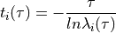

Simulate a Small Peptide and analyze the datas by FSATOOL¶
Introduction¶
The small peptide in our tutorial is trpzip2(PDB ID: 1le1). The sequence of this peptide is SWTWENGKWTWKX. Because of its small size and intuitive 3D interaction network, trpzip2 is a good model for hairpin folding studies. There are many other works presented the multifolding pathways of trpzip2. In this tutorial, we will perform a simlation on trpzip2 by using Mixing REMD and extract the dominant transition pathways from the folding network by Markov state model(MSM).
{kind=link}
Prepare the initial files for simulation¶
initial files¶
Prmtop and coordinates files for native structure of trpzip2.
Protop and coordinates files for initial structure of trpzip2.
Native structure¶
The native structure of trpzip2 could obtain by searching in Protein Data Bank. The ID number of native structure is 1le1.
You can download the pdb file by clicking here. This file contains
20 snapshots of NMR structure of trpzip2, but we only need one of them. You can get the first snapshot of this pdb by typing:
> cpptraj
> parm 1le1.pdb
> trajin 1le1.pdb
> trajout 1le1_1.pdb onlyframes 1
> go
> quit
Then you can get a pdb file named "1le1_1.pdb". For the
purposes of this tutorial and for the sake of simplicity we will avoid treating the trpzip2 molecule in the calculation
since this would require the setup of new parameters for this peptide and is beyond the scope of this tutorial. Thus we will
simply remove the last residue “Xaa” by erasing it from the pdb file. Hence you should remove atoms 219 to 222 from
the “1le1_1.pdb” file. You can get the final pdb file by click "1le1_2.pdb".
Initial structure¶
The LeAP program collates parameters in order to make a complete description of a molecule. We can use LeAP to model a initial
structure of trpzip2. You can get the tutorial of LeAP by visiting https://ambermd.org/tutorials/basic/tutorial10/index.php. Here, we
should only run a scripy("leap.in") and you can get the
prmtop and inpcrd file of the initial structure of trpzip2. You can also get the prmtop file "trpzip2.prmtop"
and inpcrd file "trpzip2.crd" by download here.
Then we should run minimization for initial structure of trpzip2. We should create a minimization input file(It is named “min.in” here):
&cntrl
imin = 1,
maxcyc = 2000,
ncyc = 1000,
ntb = 0,
igb = 8,
drms = 0.01,
cut = 999.0
/
Then start minimization by sander:
> sander -O -i min.in -p trpzip2.prmtop -c trpzip2.crd -o min.out -r trpzip2.rst
It will take several minutes to run minimization. Then you will get the restart file named "trpzip2.rst".
It contains the coordinates information of trpzip2 for formal simulation.
Files for Mixing REMD¶
The PDB file of native structure
"1le1_2.pdb".The prmtop file of initial structure
"trpzip2.prmtop".The coordinates file of trpzip2 of initial structure
"trpzip2.rst".
Mixing REMD for Trpzip2¶
Collective variables¶
Here we choose the root-mean-square deviation(RMSD) and radius of gyration of the Cα atomic coordinates as the
Collective variables(CVs). The CVs are defined in the colvar namelist in AMBER. The CV of RMSD is defined as follow:
&colvar
cv_type = 'MULTI_RMSD'
cv_min = 0, cv_max = 30
cv_ni= 13, cv_nr= 36
cv_i = 5, 16, 40, 54, 78, 93, 107, 114, 136, 160, 174, 198, 0,
cv_r =
-3.187, 8.462, 1.023, -2.225, 4.801, 1.762,
-4.293, 1.763, 0.555, -4.047, -2.043, 1.131,
-3.607, -4.303, -1.973, -2.409, -7.943, -2.572,
-1.114, -8.275, 1.067, 0.937, -4.966, 1.028,
0.524, -1.163, 1.467, 0.503, 1.096, -1.663,
0.192, 4.897, -2.238, -2.953, 6.324, -3.999,
/
This section contain a cv_type keyword along with a string of MULTI_RMSD and a list of integers following
cv_i keyword which represents the indexes of atoms and there is an extra number 0 at the end of the list.
cv_ni is set to the number of the integers after cv_i keyword. The Cα atomic reference coordinates following
cv_r keyword and the value of``cv_nr`` is set to three times the number of Cα atoms. The reference coordinates
of Cα atoms are extracted from the pdb of native structure "1le1_2.pdb".
cv_max and cv_min defined the largest and smallest desired value of RMSD.
The CV of radius of gyration is defined as follow:
&colvar
cv_type = 'R_OF_GYRATION'
cv_min = 0, cv_max = 20
cv_ni= 12
cv_i = 5, 16, 40, 54, 78, 93, 107, 114, 136, 160, 174, 198
/
This section contain a cv_type keyword along with a string of R_OF_GYRATION and a list of
integers following cv_i keyword which represents the indexes of atoms. For more information,
please refer to AMBER18: https://ambermd.org/doc12/Amber18.pdf.
The input file of Mixing REMD is similar to the Mixing REMD with FSATOOL. Here we provide
a job.sh file for running the simulation.
> sbatch job.sh
Now simulation was start. The total simulation time of each replicas is 2.2 μs. In this simulation, the collective coordinates of the replica are recorded to a trajectory file every 2 ps and its snapshot is recorded every 20 ps. It will take about two days to run this Mixing REMD. Because we want to analyze the trajectory at 300K, the trajectory file and information file of Mixing-REMD should be extracted and distribute among each temperature. You can download the trajectory and information files of REMD replicas at 300K by click :download:`Here <....\files\trpzip2\REMD_at_300K.rar>`.
Markov State Model Analysis¶
Trajectory file at 300K contains lots of short trajectories of trpcage folding at 300K. We will perform Markov State Model analysis on these short trajectories and extract the dominant transition pathways from the folding network. All the necessary steps, including the clustering (k-means, k-medoids and k-centers), lumping (PCCA+), flux network construction and transition path building) are implemented in this MSM module of FSATOOL.
The framework of FSATOOL.¶
We first perform the clustering and lumping step. The snapshots are clustered to 1000 microstates(ncluster = 1000) based
on the Cartesian coordinates( clustermethod = .true. ) of the atoms by k-medoids . All these microstates are further
lumped into 30 macrostates( nstate = 30 ) by PCCA+ . The input file of MSM shows below:
&msm
ndim=654,
ncluster=1000,
lagstep=10,
nstate=30,
ifreadcoor=.true.
startstate =1
endstate = 6
clustermethod="coordinate"
/
&trajs
ncv = 2
kelvinarray=300
cvsfiles="levelinfo_0.txt"
coorfiles="../level_0.nc"
trajtype=2
framestride = 10
/
The number of atoms in Trpzip2 is 218. When the clustermethod is “coordinates”, ndim must equal to atoms*3. ifreadcoor is
set to “.true.” means the information of input files is set in `` &traj `` namelist. There are two collection variables(ncv = 2) are
output in the information file(“levelinfo_0.txt”). The snapshots are extracted from the trajectory at 300K(kelvinarray = 300).
framestride is equal to ntwx/ntpr (snapshot output interval divided by CVs output interval). For more information, please
refer to MSM (Markov State Model).
It will generate a folder named “info”. This folder contains the files about the clustering and lumping information.
> fsatool msm
The lag step of building MSM is set to 10 is inaccurate. To validate markov state model, we should computing implied timescale along different lagtime :

This module we should support input file for check :
&check
checkmethod="timescales",
datafile="../info/cluster_forcheck.txt",
nsnap=112888,
ncluster=1000,
lagstart=1,
lagend=50
/
datafile indicates the path of “cluster_forcheck.txt” which is generate after running the MSM. nsanp is equal to the number
of snapshots of “level_0.nc”. lagstart and lagend are the maximum and minimum steps for check respectively.
> fsatool msm check
The result of check is output in “check.out”. We can see the result by perform :
> xmgrace -nxy check.out
{kind=link}
We can see that when the lag step is greater than 20, the implied timescale tends to be stable. So 30 is a good choice for lag step.
We can execute MSM module again by modifying the lagstep from 10 to 30. And this process does not require re-clustering, so
ifreadcoor is modified to “.false.”. The input file of MSM shows below:
&msm
ndim=654,
ncluster=1000,
lagstep=30,
nstate=30,
ifreadcoor=.false.
startstate =1
endstate = 6
clustermethod="coordinate"
/
&trajs
ncv = 2
kelvinarray=300
cvsfiles="levelinfo_0.txt"
coorfiles="../level_0.nc"
trajtype=2
framestride = 10
/
> fsatool msm
Now we get reasonable clustering and lumping result. We can see the macrostates result by visiting the file “stateindex.txt” which is located in the “info” folder.
30 1000 112888
1 1 1 194 359 56066 0.688 5.755
2 4 3 275 819 89992 4.616 5.693
3 7 3 220 998 47526 3.600 6.102
4 8 1 75 648 52290 6.241 6.729
5 9 1 114 391 67014 5.684 5.417
6 10 1 187 409 29249 4.483 5.592
7 11 1 202 47 93456 5.195 5.643
8 12 1 156 256 25789 6.772 6.291
9 14 2 276 454 27062 2.242 5.948
10 16 2 151 11 17626 5.958 5.618
11 19 3 283 759 23229 6.326 6.257
12 20 1 162 733 49635 5.992 6.214
13 22 2 229 61 2970 4.011 6.532
14 27 5 344 38 48346 6.912 6.133
15 28 1 122 242 57494 5.097 5.934
16 35 7 799 562 67455 6.027 7.160
17 38 3 461 458 66571 2.928 6.169
18 39 1 166 671 48676 2.815 5.435
19 43 4 809 667 5461 6.760 6.030
20 54 11 1735 396 63224 0.332 5.963
21 55 1 245 259 90940 4.111 6.121
22 56 1 269 916 91132 2.775 6.338
23 65 9 1530 183 31604 0.416 5.817
24 77 12 2459 18 110260 0.752 5.834
25 120 43 5580 380 76965 7.470 6.669
26 163 43 5167 10 79788 6.481 6.926
27 376 213 19959 15 29401 7.370 7.468
28 455 79 10408 133 11511 4.989 6.312
29 566 111 18025 842 74089 6.755 6.579
30 1000 434 42286 260 72401 7.222 7.992
You will see a text file similar to this result. Different times of execution may have different results, but it will not affect our subsequent analysis. The last two columns in this file respectively record the Cα-RMSD and radius of gyration of the central structure of each macrostate. To construct the folding path based on the transition path theory, we set the macrostate with the minimum Cα-RMSD(macrostates 20) as the folded state and the macrostates with Cα-RMSD more than 7.0 A(macrostates 25,27,30) as the unfolded states. The dominant transition pathways can be obtained by performing the TPT module :
> fsatool msm tpt
The imput file of tpt shows below :
&tpt
tpmfile = "tpm.txt"
statefile = "states.txt"
startstate = 25,27,30
endstate = 20
/
Visualization¶
We provide some simple scripts to show the representive structure in a cluster of structures. And show the transition pathway according to the flux after analyzing by the MSM module.
Extract representative structure¶
> python extract_structure.py
It will extract the representative structure of each macrostate. It should be noted that the file path
in the script needs to be changed according to its location. interval is equal to framestride
in “msm.in”(snapshot output interval divided by CVs output interval). It will output all the snapshots
contained in the microstate which at the center of each macrostate. For example, “state_07.nc” records the snapshots
of microstate which at the center of macrostate 7.
> python vmd_show.py -p trpzip2.prmtop -t state_07.nc
{kind=link}
Repeat this step, for each macrostate we take a representative structure diagram. For reference,
here are the representative structure diagrams of all 30 macrostates.
Plot flux network¶
> python plot_network -i tpt.out
> dot -Tpdf file.dot > network.pdf
the net flux file should be provided after
-iargument. Default file name is “tpt.out”.the image directory should be provided after
-dargument. Default directory is “.”.The output file should use the
dotcommand to output the image.
Now we have a PDF file that contains all the folding paths from the initial state to the final state.
{kind=link}
As you see, this picture is too complicated ! It is difficult for us to obtain useful information from this picture. So we can abandon some small flux paths by modifying a parameter in “plot_network.py”.
{kind=link}
By reducing the total flux from 1 to 0.9603, we get a more concise folding path diagram.
{kind=link}
In Adobe Acrobat or other vector graphics editing software, we select the edit graphics command and delete some isolated states. Then adjusting the size of some arrows, and finally we can get a beautiful transition pathways map.
{kind=link}